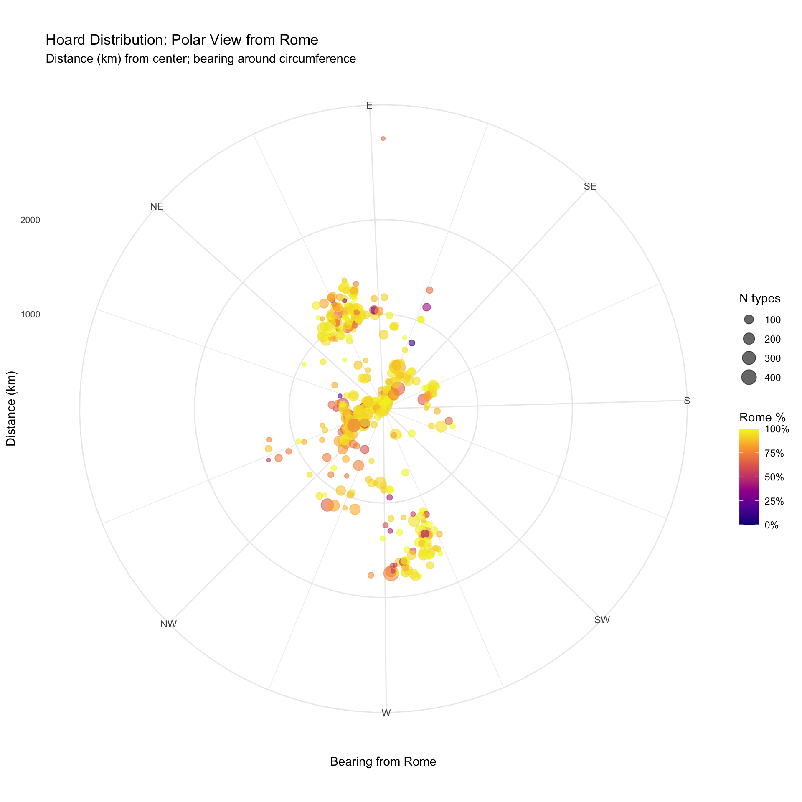
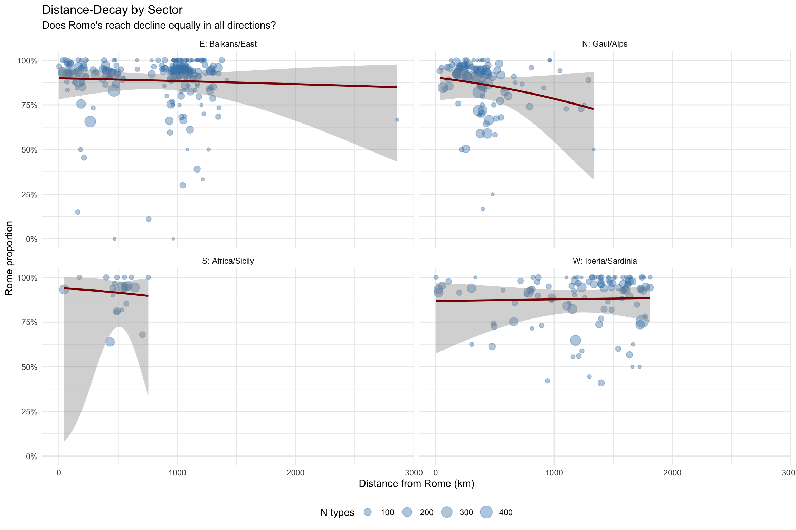
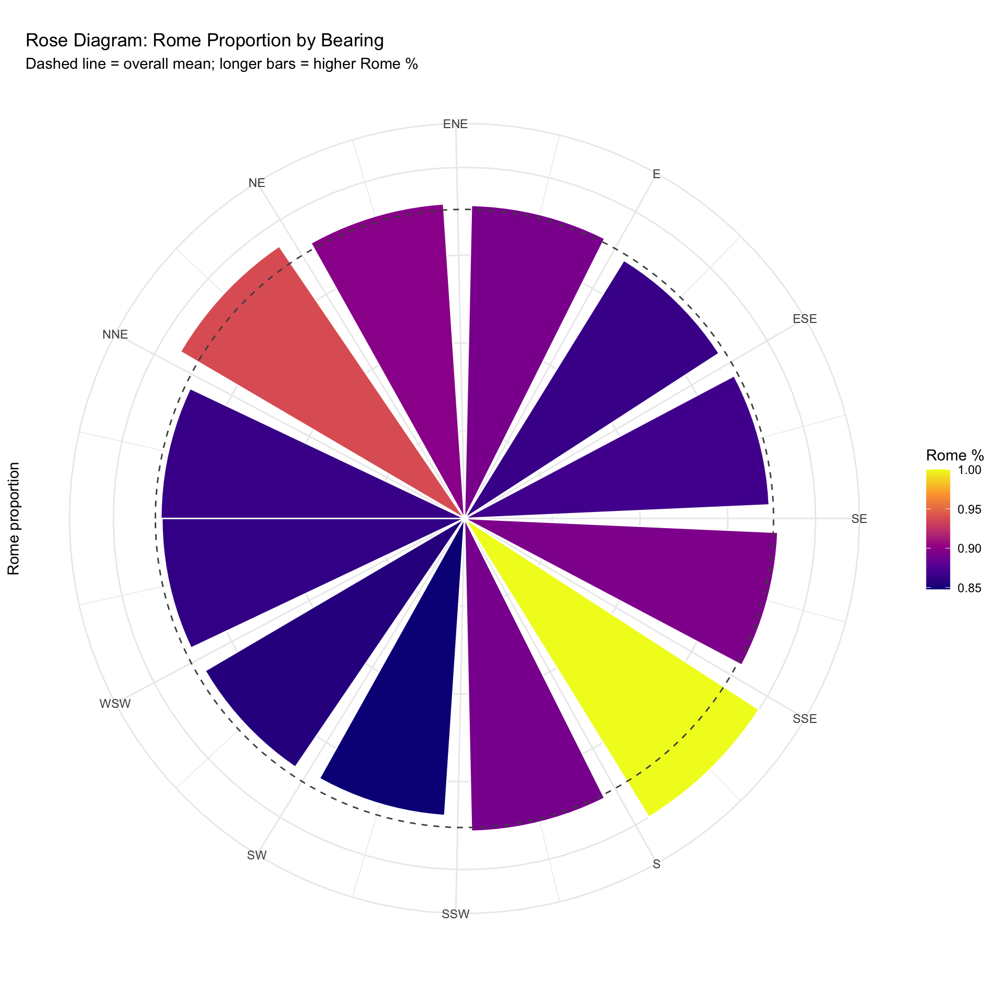
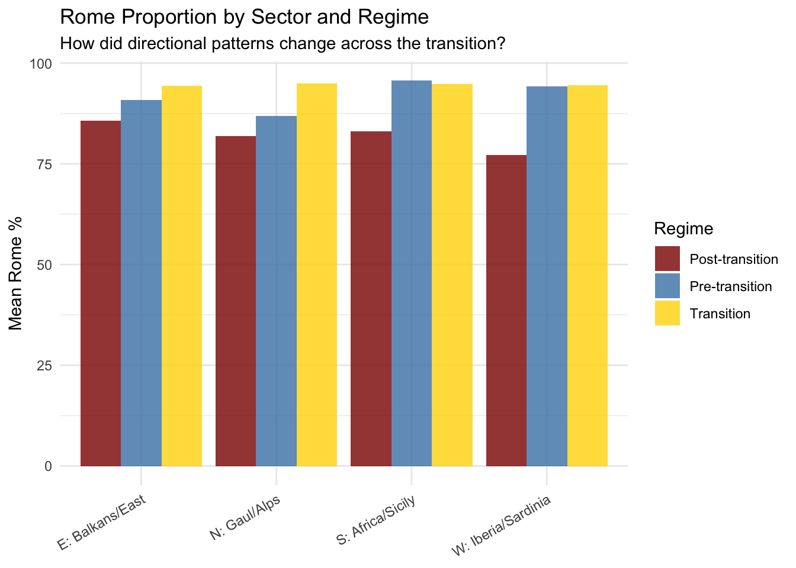
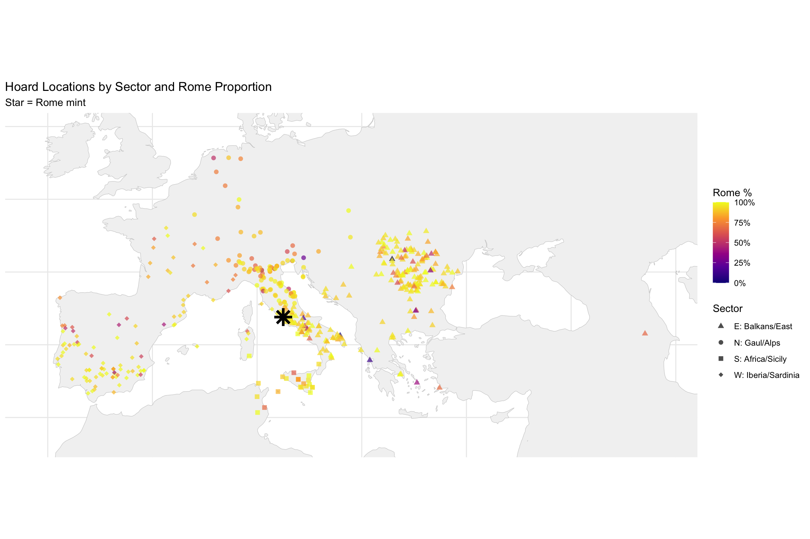
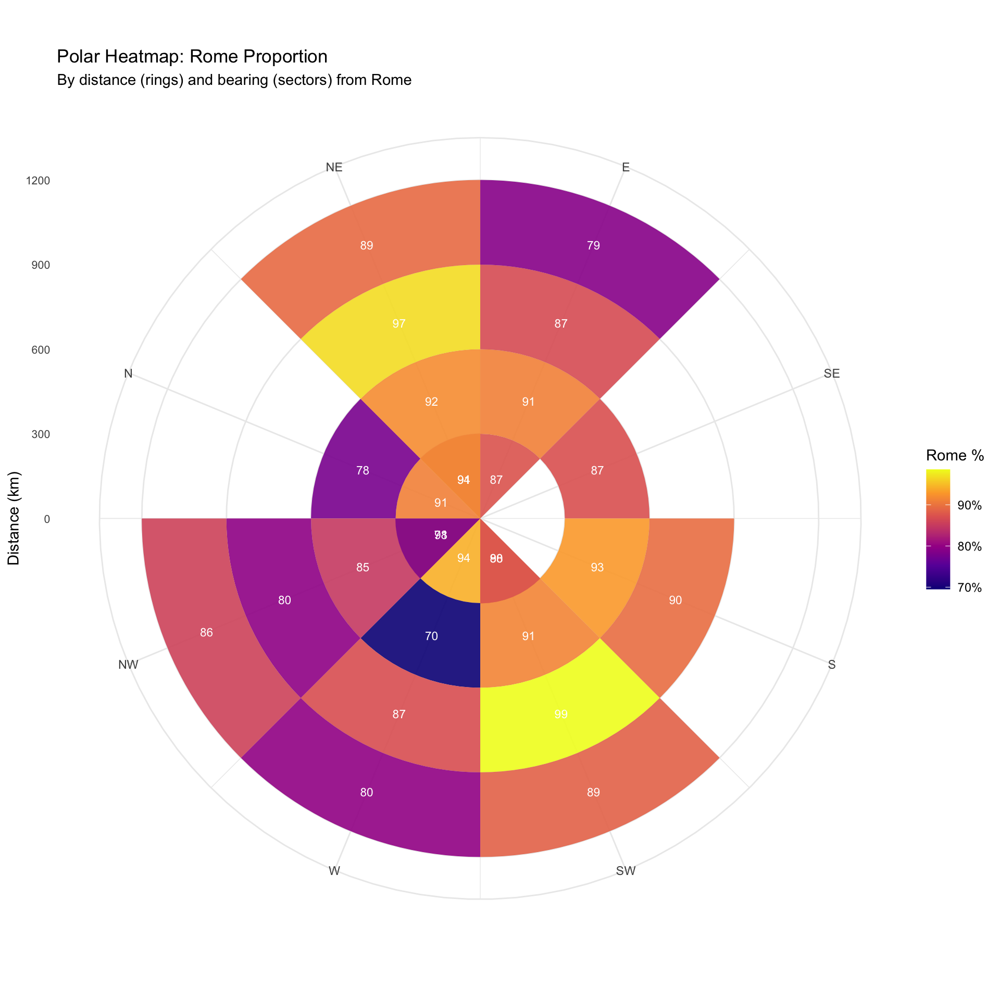

Code
library(tidyverse)
library(sf)
library(knitr)
library(patchwork)
library(broom)
theme_set(theme_minimal())Testing Whether Rome’s Influence Varied by Direction
John Glendenning
December 18, 2025
Previous analyses tested whether Rome’s monetary penetration declined with distance. But distance alone assumes isotropic diffusion—equal spread in all directions.
Real monetary circulation likely followed:
Rome % ~ distance * direction interactionschrr_file <- "/Users/john/Library/Mobile Documents/com~apple~CloudDocs/Home/John/GIS/Roman Italy GIS/Coin Project/data/chrr_data.csv"
data_loaded <- FALSE
if (file.exists(chrr_file)) {
chrr_raw <- read_csv(chrr_file, show_col_types = FALSE)
data_loaded <- TRUE
cat("✓ Loaded", nrow(chrr_raw), "rows\n")
} else {
alt_paths <- c("/mnt/user-data/uploads/chrr_data.csv", "~/chrr_data.csv")
for (alt in alt_paths) {
if (file.exists(alt)) {
chrr_raw <- read_csv(alt, show_col_types = FALSE)
data_loaded <- TRUE
break
}
}
}✓ Loaded 31951 rows# Flag Rome and parse dates
chrr_prep <- chrr_raw %>%
mutate(
is_rome = mint_id == "rome" | str_detect(mint_uri, "/id/rome$"),
is_rome = replace_na(is_rome, FALSE),
tpq_year = readr::parse_number(as.character(hoard_tpq))
) %>%
filter(!is.na(hoard_lat), !is.na(hoard_long))
# Rome coordinates
rome_lon <- 12.4964
rome_lat <- 41.9028
# Aggregate to hoard level with polar coordinates
hoard_polar <- chrr_prep %>%
group_by(hoard_id, hoard_lat, hoard_long, tpq_year) %>%
summarise(
n_types = n(),
n_rome = sum(is_rome),
p_rome = n_rome / n_types,
.groups = "drop"
) %>%
mutate(
# Distance (approximate km using degree conversion)
delta_lon = hoard_long - rome_lon,
delta_lat = hoard_lat - rome_lat,
dist_km = sqrt((delta_lon * 111 * cos(rome_lat * pi/180))^2 +
(delta_lat * 111)^2),
# Bearing from Rome (0 = North, 90 = East, etc.)
bearing_rad = atan2(delta_lon * cos(rome_lat * pi/180), delta_lat),
bearing_deg = (bearing_rad * 180 / pi + 360) %% 360,
# Trigonometric components for regression
cos_bearing = cos(bearing_rad),
sin_bearing = sin(bearing_rad),
# Quadrant sectors
sector = case_when(
bearing_deg >= 315 | bearing_deg < 45 ~ "N: Gaul/Alps",
bearing_deg >= 45 & bearing_deg < 135 ~ "E: Balkans/East",
bearing_deg >= 135 & bearing_deg < 225 ~ "S: Africa/Sicily",
bearing_deg >= 225 & bearing_deg < 315 ~ "W: Iberia/Sardinia"
),
# Finer sectors (8 directions)
sector_8 = case_when(
bearing_deg >= 337.5 | bearing_deg < 22.5 ~ "N",
bearing_deg >= 22.5 & bearing_deg < 67.5 ~ "NE",
bearing_deg >= 67.5 & bearing_deg < 112.5 ~ "E",
bearing_deg >= 112.5 & bearing_deg < 157.5 ~ "SE",
bearing_deg >= 157.5 & bearing_deg < 202.5 ~ "S",
bearing_deg >= 202.5 & bearing_deg < 247.5 ~ "SW",
bearing_deg >= 247.5 & bearing_deg < 292.5 ~ "W",
bearing_deg >= 292.5 & bearing_deg < 337.5 ~ "NW"
)
)
cat("Hoards with polar coordinates:", nrow(hoard_polar), "\n")Hoards with polar coordinates: 466 period_breaks <- c(-Inf, -150, -100, -50, 14, Inf)
hoard_polar <- hoard_polar %>%
mutate(
tpq_period = cut(tpq_year, breaks = period_breaks,
labels = c("1: Early Republic", "2: Late Republic I",
"3: Late Republic II", "4: Triumviral/Augustan",
"5: Early Imperial"),
right = TRUE),
regime = case_when(
tpq_year < -100 ~ "Pre-transition",
tpq_year >= -100 & tpq_year < -50 ~ "Transition",
tpq_year >= -50 ~ "Post-transition"
)
) %>%
filter(!is.na(tpq_period))ggplot(hoard_polar, aes(x = bearing_deg, y = dist_km)) +
geom_point(aes(color = p_rome, size = n_types), alpha = 0.6) +
scale_color_viridis_c(name = "Rome %", labels = scales::percent_format(),
option = "plasma") +
scale_size_continuous(name = "N types", range = c(1, 6)) +
coord_polar(theta = "x", start = -pi/2, direction = 1) +
scale_x_continuous(breaks = seq(0, 315, 45),
labels = c("N", "NE", "E", "SE", "S", "SW", "W", "NW")) +
labs(
title = "Hoard Distribution: Polar View from Rome",
subtitle = "Distance (km) from center; bearing around circumference",
x = "Bearing from Rome",
y = "Distance (km)"
) +
theme(
axis.text.y = element_text(size = 8),
legend.position = "right"
)
sector_summary <- hoard_polar %>%
group_by(sector) %>%
summarise(
n_hoards = n(),
mean_dist = mean(dist_km),
mean_rome_pct = weighted.mean(p_rome, n_types) * 100,
median_rome_pct = median(p_rome) * 100,
total_types = sum(n_types),
.groups = "drop"
) %>%
arrange(desc(mean_rome_pct))
kable(sector_summary, digits = 1,
col.names = c("Sector", "N Hoards", "Mean Dist (km)",
"Mean Rome %", "Median Rome %", "Total Types"),
caption = "Rome penetration by geographic sector")| Sector | N Hoards | Mean Dist (km) | Mean Rome % | Median Rome % | Total Types |
|---|---|---|---|---|---|
| E: Balkans/East | 222 | 818.8 | 89.4 | 93.6 | 12777 |
| S: Africa/Sicily | 25 | 506.1 | 89.1 | 94.4 | 1499 |
| W: Iberia/Sardinia | 110 | 1223.5 | 87.4 | 93.6 | 6653 |
| N: Gaul/Alps | 106 | 414.7 | 86.6 | 91.6 | 9503 |
Call:
glm(formula = cbind(n_rome, n_types - n_rome) ~ dist_km, family = binomial(link = "logit"),
data = hoard_polar)
Coefficients:
Estimate Std. Error z value Pr(>|z|)
(Intercept) 2.055e+00 3.072e-02 66.883 <2e-16 ***
dist_km -8.031e-05 3.568e-05 -2.251 0.0244 *
---
Signif. codes: 0 '***' 0.001 '**' 0.01 '*' 0.05 '.' 0.1 ' ' 1
(Dispersion parameter for binomial family taken to be 1)
Null deviance: 3220.1 on 462 degrees of freedom
Residual deviance: 3215.1 on 461 degrees of freedom
AIC: 4455.4
Number of Fisher Scoring iterations: 5
AIC (isotropic): 4455.434
Call:
glm(formula = cbind(n_rome, n_types - n_rome) ~ dist_km + cos_bearing +
sin_bearing, family = binomial(link = "logit"), data = hoard_polar)
Coefficients:
Estimate Std. Error z value Pr(>|z|)
(Intercept) 2.063e+00 3.610e-02 57.151 < 2e-16 ***
dist_km -6.487e-05 3.853e-05 -1.684 0.092255 .
cos_bearing -1.158e-01 3.333e-02 -3.474 0.000513 ***
sin_bearing 1.238e-01 2.417e-02 5.121 3.03e-07 ***
---
Signif. codes: 0 '***' 0.001 '**' 0.01 '*' 0.05 '.' 0.1 ' ' 1
(Dispersion parameter for binomial family taken to be 1)
Null deviance: 3220.1 on 462 degrees of freedom
Residual deviance: 3164.7 on 459 degrees of freedom
AIC: 4409
Number of Fisher Scoring iterations: 5
AIC (anisotropic): 4409.009
Call:
glm(formula = cbind(n_rome, n_types - n_rome) ~ dist_km * cos_bearing +
dist_km * sin_bearing, family = binomial(link = "logit"),
data = hoard_polar)
Coefficients:
Estimate Std. Error z value Pr(>|z|)
(Intercept) 1.994e+00 3.713e-02 53.697 < 2e-16 ***
dist_km 2.913e-05 4.035e-05 0.722 0.470313
cos_bearing 3.010e-01 6.233e-02 4.829 1.37e-06 ***
sin_bearing 1.883e-01 5.455e-02 3.452 0.000556 ***
dist_km:cos_bearing -8.818e-04 1.081e-04 -8.154 3.52e-16 ***
dist_km:sin_bearing 5.032e-05 5.501e-05 0.915 0.360355
---
Signif. codes: 0 '***' 0.001 '**' 0.01 '*' 0.05 '.' 0.1 ' ' 1
(Dispersion parameter for binomial family taken to be 1)
Null deviance: 3220.1 on 462 degrees of freedom
Residual deviance: 3098.3 on 457 degrees of freedom
AIC: 4346.7
Number of Fisher Scoring iterations: 5
AIC (interaction): 4346.673 # Compare models
model_comp <- tibble(
Model = c("Isotropic (distance only)",
"Anisotropic (distance + direction)",
"Interaction (direction-dependent distance)"),
AIC = c(AIC(model_iso), AIC(model_aniso), AIC(model_interact)),
df = c(df.residual(model_iso), df.residual(model_aniso), df.residual(model_interact))
) %>%
mutate(delta_AIC = AIC - min(AIC))
kable(model_comp, digits = 1, caption = "Model comparison (lower AIC = better fit)")| Model | AIC | df | delta_AIC |
|---|---|---|---|
| Isotropic (distance only) | 4455.4 | 461 | 108.8 |
| Anisotropic (distance + direction) | 4409.0 | 459 | 62.3 |
| Interaction (direction-dependent distance) | 4346.7 | 457 | 0.0 |
Likelihood ratio test: Isotropic vs AnisotropicAnalysis of Deviance Table
Model 1: cbind(n_rome, n_types - n_rome) ~ dist_km
Model 2: cbind(n_rome, n_types - n_rome) ~ dist_km + cos_bearing + sin_bearing
Resid. Df Resid. Dev Df Deviance Pr(>Chi)
1 461 3215.1
2 459 3164.7 2 50.425 1.123e-11 ***
---
Signif. codes: 0 '***' 0.001 '**' 0.01 '*' 0.05 '.' 0.1 ' ' 1
Likelihood ratio test: Anisotropic vs InteractionAnalysis of Deviance Table
Model 1: cbind(n_rome, n_types - n_rome) ~ dist_km + cos_bearing + sin_bearing
Model 2: cbind(n_rome, n_types - n_rome) ~ dist_km * cos_bearing + dist_km *
sin_bearing
Resid. Df Resid. Dev Df Deviance Pr(>Chi)
1 459 3164.7
2 457 3098.3 2 66.336 3.938e-15 ***
---
Signif. codes: 0 '***' 0.001 '**' 0.01 '*' 0.05 '.' 0.1 ' ' 1sector_models <- hoard_polar %>%
filter(!is.na(sector)) %>%
group_by(sector) %>%
nest() %>%
mutate(
model = map(data, ~glm(
cbind(n_rome, n_types - n_rome) ~ dist_km,
family = binomial(link = "logit"),
data = .x
)),
tidy = map(model, tidy)
) %>%
unnest(tidy) %>%
filter(term == "dist_km") %>%
dplyr::select(sector, estimate, std.error, p.value) %>%
mutate(
or_100km = exp(estimate * 100),
sig = ifelse(p.value < 0.05, "*", "")
)
kable(sector_models, digits = c(0, 5, 5, 4, 4, 0),
col.names = c("Sector", "Coefficient", "SE", "p-value", "OR/100km", "Sig"),
caption = "Distance effect by sector (* = p < 0.05)")| Sector | Coefficient | SE | p-value | OR/100km | Sig |
|---|---|---|---|---|---|
| E: Balkans/East | -0.00008 | 0.00007 | 0.2204 | 0.9918 | |
| W: Iberia/Sardinia | -0.00009 | 0.00007 | 0.2264 | 0.9912 | |
| N: Gaul/Alps | -0.00127 | 0.00015 | 0.0000 | 0.8807 | * |
| S: Africa/Sicily | -0.00014 | 0.00045 | 0.7616 | 0.9864 |
ggplot(hoard_polar, aes(x = dist_km, y = p_rome)) +
geom_point(aes(size = n_types), alpha = 0.4, color = "steelblue") +
geom_smooth(method = "glm", method.args = list(family = "binomial"),
color = "darkred", se = TRUE) +
facet_wrap(~sector, ncol = 2) +
scale_y_continuous(labels = scales::percent_format()) +
scale_size_continuous(name = "N types", range = c(1, 6)) +
labs(
title = "Distance-Decay by Sector",
subtitle = "Does Rome's reach decline equally in all directions?",
x = "Distance from Rome (km)",
y = "Rome proportion"
) +
theme(legend.position = "bottom")
# Bin by bearing
bearing_bins <- hoard_polar %>%
mutate(bearing_bin = cut(bearing_deg, breaks = seq(0, 360, 30),
include.lowest = TRUE,
labels = seq(15, 345, 30))) %>%
group_by(bearing_bin) %>%
summarise(
n_hoards = n(),
mean_rome = weighted.mean(p_rome, n_types),
total_types = sum(n_types),
.groups = "drop"
) %>%
mutate(bearing_mid = as.numeric(as.character(bearing_bin)))
ggplot(bearing_bins, aes(x = bearing_mid, y = mean_rome)) +
geom_col(aes(fill = mean_rome), width = 25, color = "white") +
geom_hline(yintercept = mean(hoard_polar$p_rome, na.rm = TRUE),
linetype = "dashed", color = "grey30") +
coord_polar(theta = "x", start = -pi/2, direction = 1) +
scale_x_continuous(breaks = seq(0, 330, 30),
labels = c("N", "NNE", "NE", "ENE", "E", "ESE",
"SE", "SSE", "S", "SSW", "SW", "WSW")) +
scale_fill_viridis_c(option = "plasma", name = "Rome %") +
labs(
title = "Rose Diagram: Rome Proportion by Bearing",
subtitle = "Dashed line = overall mean; longer bars = higher Rome %",
x = NULL, y = "Rome proportion"
) +
theme(
axis.text.y = element_blank(),
axis.ticks.y = element_blank()
)
regime_direction <- hoard_polar %>%
filter(!is.na(regime)) %>%
group_by(regime) %>%
nest() %>%
mutate(
# Isotropic model
model_iso = map(data, ~glm(
cbind(n_rome, n_types - n_rome) ~ dist_km,
family = binomial, data = .x
)),
# Anisotropic model
model_aniso = map(data, ~glm(
cbind(n_rome, n_types - n_rome) ~ dist_km + cos_bearing + sin_bearing,
family = binomial, data = .x
)),
# Compare
aic_iso = map_dbl(model_iso, AIC),
aic_aniso = map_dbl(model_aniso, AIC),
aic_diff = aic_iso - aic_aniso, # Positive = anisotropic better
# LRT p-value
lrt_p = map2_dbl(model_iso, model_aniso, ~{
test <- anova(.x, .y, test = "Chisq")
test$`Pr(>Chi)`[2]
})
) %>%
dplyr::select(regime, aic_iso, aic_aniso, aic_diff, lrt_p) %>%
mutate(
aniso_sig = ifelse(lrt_p < 0.05, "Yes*", "No")
)
kable(regime_direction, digits = c(0, 1, 1, 1, 4, 0),
col.names = c("Regime", "AIC (iso)", "AIC (aniso)", "ΔAIC", "LRT p", "Aniso Sig?"),
caption = "Does adding direction improve model fit? (by regime)")| Regime | AIC (iso) | AIC (aniso) | ΔAIC | LRT p | Aniso Sig? |
|---|---|---|---|---|---|
| Post-transition | 2363.2 | 2249.7 | 113.4 | 0.0000 | Yes* |
| Transition | 588.3 | 588.3 | -0.1 | 0.1420 | No |
| Pre-transition | 507.1 | 495.1 | 11.9 | 0.0003 | Yes* |
sector_regime <- hoard_polar %>%
filter(!is.na(regime), !is.na(sector)) %>%
group_by(regime, sector) %>%
summarise(
n_hoards = n(),
mean_rome = weighted.mean(p_rome, n_types) * 100,
total_types = sum(n_types),
.groups = "drop"
)
ggplot(sector_regime, aes(x = sector, y = mean_rome, fill = regime)) +
geom_col(position = "dodge", alpha = 0.8) +
scale_fill_manual(values = c("Pre-transition" = "steelblue",
"Transition" = "gold",
"Post-transition" = "darkred")) +
labs(
title = "Rome Proportion by Sector and Regime",
subtitle = "How did directional patterns change across the transition?",
x = NULL,
y = "Mean Rome %",
fill = "Regime"
) +
theme(axis.text.x = element_text(angle = 30, hjust = 1))
sector_regime_models <- hoard_polar %>%
filter(!is.na(regime), !is.na(sector)) %>%
group_by(regime, sector) %>%
filter(n() >= 10) %>% # Need minimum sample
nest() %>%
mutate(
model = map(data, ~tryCatch(
glm(cbind(n_rome, n_types - n_rome) ~ dist_km,
family = binomial, data = .x),
error = function(e) NULL
)),
tidy = map(model, ~if(!is.null(.x)) tidy(.x) else NULL)
) %>%
filter(!map_lgl(tidy, is.null)) %>%
unnest(tidy) %>%
filter(term == "dist_km") %>%
dplyr::select(regime, sector, estimate, std.error, p.value) %>%
mutate(
or_100km = exp(estimate * 100),
sig = ifelse(p.value < 0.05, "*", "")
)
kable(sector_regime_models, digits = c(0, 0, 5, 5, 4, 4, 0),
col.names = c("Regime", "Sector", "Coef", "SE", "p", "OR/100km", ""),
caption = "Distance effect by sector and regime")| Regime | Sector | Coef | SE | p | OR/100km | |
|---|---|---|---|---|---|---|
| Post-transition | E: Balkans/East | 0.00028 | 0.00009 | 0.0012 | 1.0282 | * |
| Post-transition | W: Iberia/Sardinia | -0.00027 | 0.00009 | 0.0042 | 0.9732 | * |
| Transition | E: Balkans/East | 0.00022 | 0.00015 | 0.1269 | 1.0225 | |
| Pre-transition | W: Iberia/Sardinia | 0.00075 | 0.00037 | 0.0422 | 1.0781 | * |
| Post-transition | N: Gaul/Alps | -0.00067 | 0.00017 | 0.0001 | 0.9350 | * |
| Transition | W: Iberia/Sardinia | 0.00028 | 0.00014 | 0.0482 | 1.0286 | * |
| Pre-transition | S: Africa/Sicily | -0.00195 | 0.00254 | 0.4413 | 0.8225 | |
| Transition | N: Gaul/Alps | -0.00001 | 0.00063 | 0.9847 | 0.9988 | |
| Pre-transition | E: Balkans/East | 0.00035 | 0.00055 | 0.5287 | 1.0354 | |
| Pre-transition | N: Gaul/Alps | -0.00126 | 0.00059 | 0.0337 | 0.8819 | * |
library(rnaturalearth)
library(rnaturalearthdata)
# Get land
land <- ne_countries(scale = "medium", returnclass = "sf") %>% st_union()
# Create sf from hoards
hoard_sf <- st_as_sf(hoard_polar, coords = c("hoard_long", "hoard_lat"),
crs = 4326, remove = FALSE)
hoard_bbox <- st_bbox(hoard_sf)
# Rome point
rome_sf <- st_as_sf(tibble(lon = rome_lon, lat = rome_lat),
coords = c("lon", "lat"), crs = 4326)
ggplot() +
geom_sf(data = land, fill = "grey95", color = "grey80") +
geom_sf(data = hoard_sf, aes(color = p_rome, shape = sector),
size = 2, alpha = 0.7) +
geom_sf(data = rome_sf, color = "black", shape = 8, size = 5, stroke = 2) +
scale_color_viridis_c(name = "Rome %", labels = scales::percent_format(),
option = "plasma") +
scale_shape_manual(values = c("N: Gaul/Alps" = 16, "E: Balkans/East" = 17,
"S: Africa/Sicily" = 15, "W: Iberia/Sardinia" = 18)) +
coord_sf(xlim = c(hoard_bbox["xmin"] - 2, hoard_bbox["xmax"] + 2),
ylim = c(hoard_bbox["ymin"] - 2, hoard_bbox["ymax"] + 2)) +
labs(
title = "Hoard Locations by Sector and Rome Proportion",
subtitle = "Star = Rome mint",
shape = "Sector"
) +
theme_minimal() +
theme(axis.text = element_blank(), axis.title = element_blank())
# Bin by distance and bearing
polar_bins <- hoard_polar %>%
mutate(
dist_bin = cut(dist_km, breaks = seq(0, 3000, 300), include.lowest = TRUE),
bearing_bin = cut(bearing_deg, breaks = seq(0, 360, 45), include.lowest = TRUE)
) %>%
group_by(dist_bin, bearing_bin) %>%
summarise(
n = n(),
mean_rome = weighted.mean(p_rome, n_types),
.groups = "drop"
) %>%
filter(n >= 3) # Minimum sample
# Extract bin midpoints
polar_bins <- polar_bins %>%
mutate(
dist_mid = as.numeric(str_extract(as.character(dist_bin), "\\d+")) + 150,
bearing_mid = as.numeric(str_extract(as.character(bearing_bin), "\\d+")) + 22.5
)
ggplot(polar_bins, aes(x = bearing_mid, y = dist_mid, fill = mean_rome)) +
geom_tile(width = 45, height = 300, alpha = 0.9) +
geom_text(aes(label = round(mean_rome * 100)), size = 3, color = "white") +
coord_polar(theta = "x", start = -pi/2) +
scale_fill_viridis_c(name = "Rome %", labels = scales::percent_format(),
option = "plasma") +
scale_x_continuous(breaks = seq(22.5, 337.5, 45),
labels = c("N", "NE", "E", "SE", "S", "SW", "W", "NW")) +
labs(
title = "Polar Heatmap: Rome Proportion",
subtitle = "By distance (rings) and bearing (sectors) from Rome",
x = NULL, y = "Distance (km)"
) +
theme(axis.text.y = element_text(size = 8))
# Best model
best_model <- model_comp %>% filter(delta_AIC == 0) %>% pull(Model)
# Strongest/weakest sectors
strongest <- sector_summary %>% slice_max(mean_rome_pct, n = 1)
weakest <- sector_summary %>% slice_min(mean_rome_pct, n = 1)
cat("
================================================================
DIRECTIONAL FLOW ANALYSIS: KEY FINDINGS
================================================================
1. ANISOTROPY TEST
")
================================================================
DIRECTIONAL FLOW ANALYSIS: KEY FINDINGS
================================================================
1. ANISOTROPY TEST Best fitting model: Interaction (direction-dependent distance) Interpretation: Rome's reach varied significantly by direction
2. SECTOR COMPARISON Highest Rome %: E: Balkans/East ( 89.4 %) Lowest Rome %: N: Gaul/Alps ( 86.6 %)
3. REGIME-SPECIFIC PATTERNS Post-transition : Anisotropy Yes* (ΔAIC = 113.4 )
Transition : Anisotropy No (ΔAIC = -0.1 )
Pre-transition : Anisotropy Yes* (ΔAIC = 11.9 )cat("
4. IMPLICATIONS FOR CIRCULATION
- Directional patterns suggest non-uniform diffusion
- Trade routes and geographic barriers shaped coin flow
- Anisotropy may increase in post-transition regime
(regional monetary zones with directional bias)
================================================================
")
4. IMPLICATIONS FOR CIRCULATION
- Directional patterns suggest non-uniform diffusion
- Trade routes and geographic barriers shaped coin flow
- Anisotropy may increase in post-transition regime
(regional monetary zones with directional bias)
================================================================Exported: 463 hoards with directional dataR version 4.5.1 (2025-06-13)
Platform: aarch64-apple-darwin20
Running under: macOS Sequoia 15.7.1
Matrix products: default
BLAS: /Library/Frameworks/R.framework/Versions/4.5-arm64/Resources/lib/libRblas.0.dylib
LAPACK: /Library/Frameworks/R.framework/Versions/4.5-arm64/Resources/lib/libRlapack.dylib; LAPACK version 3.12.1
locale:
[1] en_US.UTF-8/en_US.UTF-8/en_US.UTF-8/C/en_US.UTF-8/en_US.UTF-8
time zone: America/Chicago
tzcode source: internal
attached base packages:
[1] stats graphics grDevices utils datasets methods base
other attached packages:
[1] rnaturalearthdata_1.0.0 rnaturalearth_1.1.0 broom_1.0.11
[4] patchwork_1.3.2 knitr_1.50 sf_1.0-23
[7] lubridate_1.9.4 forcats_1.0.1 stringr_1.6.0
[10] dplyr_1.1.4 purrr_1.2.0 readr_2.1.6
[13] tidyr_1.3.1 tibble_3.3.0 ggplot2_4.0.1
[16] tidyverse_2.0.0
loaded via a namespace (and not attached):
[1] gtable_0.3.6 xfun_0.55 htmlwidgets_1.6.4 lattice_0.22-7
[5] tzdb_0.5.0 vctrs_0.6.5 tools_4.5.1 generics_0.1.4
[9] parallel_4.5.1 proxy_0.4-28 pkgconfig_2.0.3 Matrix_1.7-4
[13] KernSmooth_2.23-26 RColorBrewer_1.1-3 S7_0.2.1 lifecycle_1.0.4
[17] compiler_4.5.1 farver_2.1.2 htmltools_0.5.9 class_7.3-23
[21] yaml_2.3.12 pillar_1.11.1 crayon_1.5.3 classInt_0.4-11
[25] wk_0.9.4 nlme_3.1-168 tidyselect_1.2.1 digest_0.6.39
[29] stringi_1.8.7 labeling_0.4.3 splines_4.5.1 fastmap_1.2.0
[33] grid_4.5.1 cli_3.6.5 magrittr_2.0.4 e1071_1.7-16
[37] withr_3.0.2 scales_1.4.0 backports_1.5.0 bit64_4.6.0-1
[41] timechange_0.3.0 rmarkdown_2.30 bit_4.6.0 hms_1.1.4
[45] evaluate_1.0.5 viridisLite_0.4.2 s2_1.1.9 mgcv_1.9-4
[49] rlang_1.1.6 Rcpp_1.1.0 glue_1.8.0 DBI_1.2.3
[53] rstudioapi_0.17.1 vroom_1.6.7 jsonlite_2.0.0 R6_2.6.1
[57] units_1.0-0